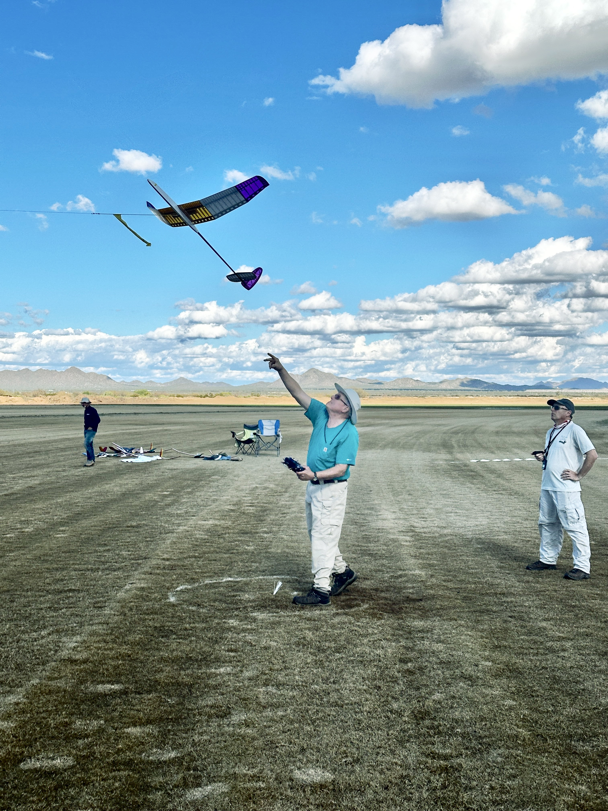
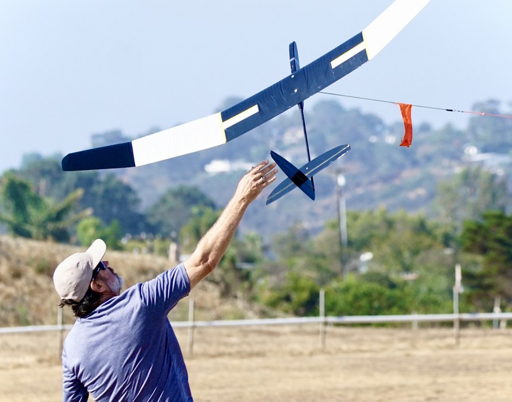

Building Your F3L Sailplane
Ready to build your first (or next) F3L competition sailplane? This page provides resources on where to find kits, build logs from experienced builders, and setup guidance.
Available F3L Kits & Models
Several manufacturers produce excellent F3L-compliant 2-meter sailplane kits. Browse these detailed build threads to learn about different models and building techniques:
Popular F3L Models
- ENCANTO x F3L/F5L - Build thread and information
- TETRA - New 2M F3RES/F5RES (electric) Glider - Detailed build log
- PURITO! - New F3RES Sailplane - Complete build guide
- RESilience F3L Kit from Germany - European option
- Yellow Jacket GS Build Log - Popular US design
- PURES 2-meter Sailplane - Classic design
- PuRES V2 - Re-Tooled, Back Again - Updated version
- Prime RES II Kit from CLM Pro - High-performance option
- Kiwi F3RES Sailplane - Third Generation! - New Zealand design
- X-RES 2-meter Sailplane from Germany - German engineering
- New Slite Available - Lightweight design
- Oz-RES - A new glider from Down Under - Australian model
- SLITE 2-meter RES Sailplane - Original Slite thread
- Samba R.E.S. Evo from Germany - Proven performer
- AndREaS 2-Meter from Germany - Detailed construction
- F3-RES ImpRESsion - Build techniques
- Baba Jaga Competition 2nd log F3-RES - Competition experience
Comparison & Hybrid Builds
Learn about different models and creative building approaches:
- Kit Bashing - Combining parts from different kits
- X-RES and X-Dream - A Comparison Build - Side-by-side comparison
- Yellow Jacket GS Tail Construction - Detailed tail building
Setting Up Your F3L Sailplane
Proper setup is crucial for competitive performance. Watch this comprehensive video on setting up controls for your F3L sailplane:
Key Setup Considerations - Get help from other pilots
- Center of Gravity (CG): Critical to indicatle lift and efficient thermal turns
- Control Throws: Follow manufacturer recommendations initially, then fine-tune
- Expo Settings: Smooth around center for precision control
- Tow hook: Tow hook position and throwing technique are critical to safe, high, launches

Perfect launch technique
Where to Buy
F3L kits and components are available from various manufacturers and hobby shops:
International Manufacturers
- Check RCGroups.com classified ads for new and used models
- European manufacturers often ship to North America
- Hyperflight has an extensive kit collection and some Almost ready-to-fly models (ARF) models as well as covering and servos Hyperflight.uk
- CLM Pro offers the Prime series CLMPro.com
- ArmSoar sells the ARF Medina 2.2m and servos ArmSoar.com
Ready to Compete?
Once your sailplane is built and properly set up, you're ready to enter your first F3L contest!

Ready for competition